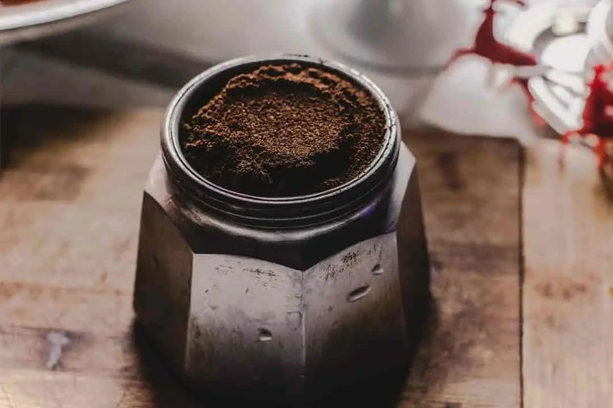

الرئيسية
أنواع القهوة
ايجابيات وسلبيات القهوة
الأصل اللغوي
طرق التحضير
الأصل اللغوي للقهوة هو:
في اللغة العربية، تخبرنا القواميس والمعاجم بأن لفظ القهوة مشتق من الفعل قها ويقال أقْهَى فلانٌ: دام على شُرْب القهوة أي ارتدَّت شهوتُه عنه من غير مرض. ويخبرنا المعجم الوسيط بأن الفعل أقْهَى يعني دام على شُرْب القهوة، أي داوم على شرابها واعتاد عليها.

مقطع صوتي يوضح جمال القهوة: